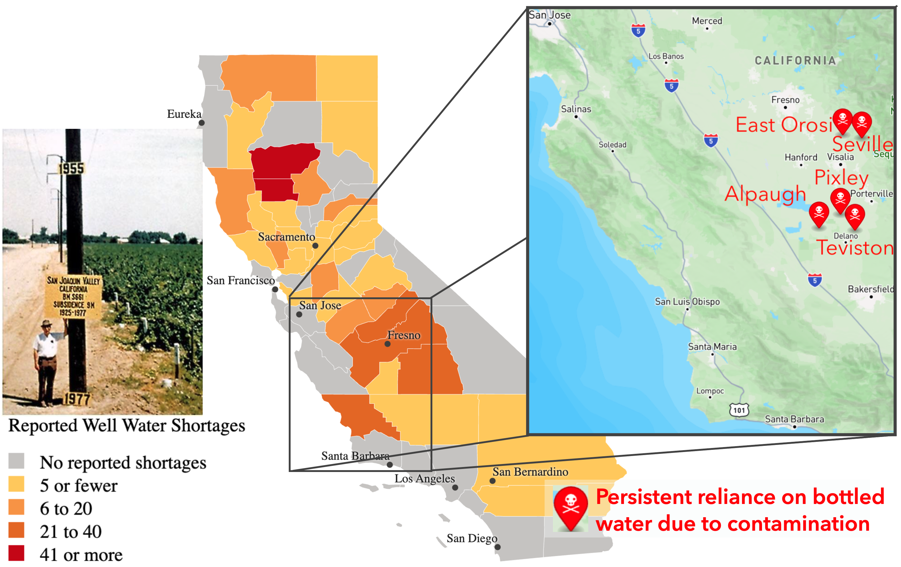

# For this normal game in this format we don't have individual partner selection
# and interaction steps. Instead all is handled in the model_step,
# i.e., coop_model_step defined below
coop_game_strategy <- make_learning_strategy(
partner_selection = \(f, m) NULL,
interaction = \(f, p, m) NULL,
model_step = coop_model_step,
label = "Normal game strategy"
)Understanding the effect of migration on cooperation in a spatial agent-based model
Introduction
Equitable access to clean potable water depends on cooperation among those sharing groundwater aquifers, consistent with Sustainable Development Goals 10 and 6. In California’s Central Valley, farms, orchards, dairies, and other agricultural industries use disproportionately more water than the communities where farm workers live in an increasingly precarious state. Wells increasingly run dry when they aren’t contaminated by deadly chemicals first. The state-level water restriction enforcement agency has recently rejected several plans proposed by local water district planners. All this currently occurs against a backdrop of climate variability and political instability that increasingly drives the migration of farmers and farm workers alike.
Theoretically, we know that high rates of migration can disrupt the formation of cooperative communities in idealized models of the establishment and diffusion of cooperation to effectively form collectives. We develop a spatial agent-based model of cooperation where agents represent water consumers arranged on a spatial grid. Migration is represented as a random switch of two agents in the grid.
We analyze how migration can break up cooperatives, i.e., blocks of cooperating agents who assort to effectively block out those who intend to defect. We characterize the effect of migration rate for a range of costs of cooperation.
This analysis perhaps suggests that supporting facilitation to connect cooperative individuals when they are forced to move could be an effective countermeasure to the deleterious effects of unguided migration we study here.

Cooperation as a correlative coordination problem
Cooperation is a correlative coordination problem, meaning that payoffs are maximized when individuals do the same behavior as others. Cooperation dilemmas, in evolutionary game theory on which we draw here, are defined to entail the risk of betrayal, where defectors are those in society who reap the benefit of costly contributions of others, but not contributing anything themselves. The more general correlative coordination problems do not necessarily entail risk of betrayal in the same sense. For example, deciding which side of the street to drive on: it doesn’t matter which side, so long as everyone does that. There is no immediate “cost” to driving on the agreed-to side of the road, only benefit that you’ll be sure to avoid crashing head-on with others, so long as they correlate their behavior with yours, i.e., with some societal norm.
It is costly to cooperate with groundwater pumping limits from the point of view of agricultural producers. For example, less water input might mean lower almond yield and fewer profits in the short term. If enough other orchards defect, this could lead to dry wells, and it would prove to have been unwise to cooperate since defectors made the most money while it lasted, multiplied in effect if defectors evaded accountability for their behavior.
Cultural evolutionary game theory
Under success-biased learning, culture can be said to evolve. A behavior is like a phenotype, and knowledge of or capacity for a behavior is like genes or alleles that encode a phenotype. Fitness in either case is the benefit received from the phenotype expression.
To study how the prevalence of cooperation varies over time and as \(t \to \infty\), we assume each agent does one of two behaviors: Cooperate or Defect. In our approach here and in many cases, it is unnecessary to represent knowledge of how to cooperate itself, including the acquisition of this knowledge. In other words, doing a behavior implies having already learned how to do it. This strategic abstraction is called the phentypic gambit, with “gambit” really meaning something more like “assumption”.
Model
The model is implemented in model.R. I show code snippets from that file to illustrate how the model works. Agents are located at grid points in a rectangular 2D lattice, though we use a square lattice with \(L=51\) agents per side in our analysis here. Agents play a cooperation game, known as the prisoner’s dilemma game, a common game theory representation of cooperation where a focal agent gets a benefit \(b \in [0, \infty)\) if their interaction partner cooperates, but the focal agent pays a cost \(-c\) if they choose to cooperate, where \(c\in[0, \infty)\). The payoffs from combinations of the four possible combinations of (Cooperate/Defect) x (Cooperate/Defect) for the dyad define the game’s payoff matrix (Table 1).
Spatial structure
Spatial structure, we hypothesize, provides the substrate for cooperation to take hold since neighbors can form spatially organized cooperatives, i.e., clusters of contiguous, connected cooperators. We represent spatial structure by locating agent nodes in a two-dimensional lattice graph we set to be square with side length \(L\), so the agent population size is \(N = L^2\). The model grid can be rectangular in general, and it is left as an exercise to the reader to test what happens when \(N\) is held constant but the aspect ratio of the grid is varied, i.e., the width divided by the height.
Computational experiment
Analysis
Discussion
- Promote adaptive mitigation: possible to focus groundwater recharge on the areas with the most amenable geological qualities for replenishing the groundwater aquifers (Stanford Doerr news brief summarizing Rosemary Knight’s research, “Scientists map fastest pathways for replenishing Central Valley groundwater”)
References
Model inspired by Ch. 6 of Paul Smaldino’s (2023) Modeling Social Behavior. Princeton University Press.
Jasechko, et al., (2024) “Rapid groundwater decline and some cases of recovery in aquifers globally”. Nature. https://www.nature.com/articles/s41586-023-06879-8
Appendix
Exercises
CA Central Valley water annotated references
Teviston: Well failures; ongoing reliance. Reuters
Alpaugh: Arsenic contamination; ongoing reliance. Wikipedia
East Orosi: Nitrate, arsenic, bacteria; ongoing reliance. Wikipedia
Seville: High nitrates; families spend >10% income. Wikipedia
Pixley: Unsafe tap water; ongoing reliance. US News
Scientists map fastest pathways for replenishing Central Valley groundwater (Stanford Doerr press release April 17, 2025)
California cracks down on another Central Valley farm area for groundwater depletion (phys.org September 23, 2024)
State rejects local plans for protecting San Joaquin Valley groundwater (Cal Matters March 3, 2023)
California enacted a groundwater law 7 years ago. But wells are still drying up — and the threat is spreading (Cal Matters August 18, 2021)
Select source code
make_cooperation_model
make_cooperation_model <- function(grid_height = 11, grid_width = 11,
coop_benefit = 1.0, coop_cost = 0.25,
disaster_cost = 0.0) {
# Set up spatial grid
g <- make_lattice(
dimvector = c(grid_height, grid_width), periodic = FALSE
)
# Define payoff matrix
payoff_matrix <- matrix(
c(coop_benefit - coop_cost, -1.0 * coop_cost,
coop_benefit, disaster_cost),
nrow = 2,
byrow = TRUE,
dimnames = list(
"Focal" = c("Cooperate", "Defect"),
"Partner" = c("Cooperate", "Defect")
)
)
# Initialized like Smaldino _MSB_ Ch. 6
abm <-
make_abm(
graph = g,
coop_benefit = coop_benefit,
coop_cost = coop_cost,
payoff_matrix = payoff_matrix,
learning_strategy = normal_game_strategy
) %>%
initialize_agents(initial_prevalence = 0.5,
adaptive_behavior = "Cooperate",
legacy_behavior = "Defect")
return (abm)
}coop_model_step
coop_model_step <- function(abm) {
# Each agent plays game, receiving a total fitness from playing with each neighbor
purrr::walk(
abm$agents,
\(agent) {
play_game_with_neighbors(agent, abm)
}
)
# After each agent plays, iterate through again to do success-biased learning
purrr::walk(
abm$agents,
\(agent) {
# For this application we need to manually check if
neighbors <- agent$get_neighbors()
tot_neighbor_fitnesses <-
sum(unlist(neighbors$map(\(n) n$get_fitness())))
# If all neighbors fitnesses are zero
if (tot_neighbor_fitnesses == 0.0) {
teacher <- neighbors$sample()
} else {
teacher <- success_bias_select_teacher(agent, abm)
}
agent$set_next_behavior(teacher$get_behavior())
# Agent-level fitness resets after each round (i.e. time step in this case)
agent$set_next_fitness(0.0)
}
)
# Use socmod-provided model step function for learning given next_behavior/fitness
iterate_learning_model(abm)
}
Social interaction and payoffs
Agents interact with all of their neighbors on each time step, collecting payoffs according to whether an agent and each neighbor is currently doing the “Cooperate” or “Defect” behavior, or equivalently whether each agent is a cooperator or defector.
They receive payoffs resulting from
play_game, which are given in Table 1 in terms of the benefit to cooperation, \(\beta\), the cost of cooperation, \(\gamma\), and the disaster payoff \(-\delta\), where \(\beta,\gamma,\delta \in [0, \infty)\). For our initial study here we will set \(\delta = 0\), leaving an examination of how cooperation prevalence is affected for different values of \(\delta > 0\) as an exercise.The
play_gamefunction is defined as follows: